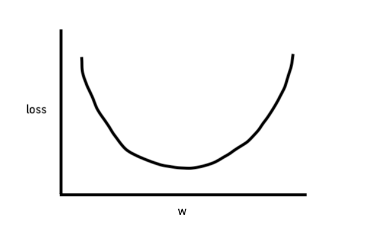

machine learning mit tensorflow
für leute, die mit wasser kochen(tm)
überblick
- kurze einführung in die theorie
- noch kürzere einführung in tensorflow
- demo-projekt
was ist dieses machine learning, von dem man so viel hört?
"Machine learning (ML) is the scientific study of algorithms and statistical models that computer systems use to effectively perform a specific task without using explicit instructions, relying on patterns and inference instead. It is seen as a subset of artificial intelligence."
lineare regression
- problem: wieviele brötchen brauchen wir fürs nächste frühstück?
- das office hat die nötigen daten
lineare regression
- problem: wieviele brötchen brauchen wir fürs nächste frühstück?
- das office hat die nötigen daten
lineare regression
- problem: wieviele brötchen brauchen wir fürs nächste frühstück?
- das office hat die nötigen daten
lineare regression
- y' = b + w1*x1
- y': label (der gewünschte output)
- b: bias (der y-achsen-abschnitt)
- w1: weight (die steigung der geraden)
- x1: feature (eine bekannte eingabegröße)
lineare regression
- für mehrere eingabe-features:
- y' = b + w1*x1 + w2*x2 + w3*x3
training und loss
- training des modells bedeutet, gute werte für weight und bias der einzelnen features zu finden
- loss ist die abweichung zwischen dem funktionswert (der vorhersage) und dem "echten" datenpunkt
training und loss
- RMSE: root mean square error
- weit verbreitete loss-funktion
- RMSE = √1⁄N Σ(x,y ∈ D) (y - vorhersage(x))2
- wurzel der summe der durchschnittlichen, quadrierten abweichungen
gradient descent
- eine methode, um optimale parameter (w, b) mit minimalem loss zu finden
- iteratives vorgehen:
- startwerte für parameter festlegen (z.B. w=0, b=0)
- loss berechnen
- neue parameter berechnen
- loss berechnen
- ...
- der loss bleibt konstant: das modell konvergiert
gradient descent
- loss / w ist eine konvexe kurve

- gradient: die ableitung der funktion
- wir suchen das minimum der funktion
gradient descent
- nächster schritt: w in richtung des negativen gradienten (für den alten wert von w) verschieben
gradient descent
- schrittgröße = negativer gradient * learning rate
- kleine learning rate: model braucht sehr lange, um zu konvergieren
- große learning rate: minimum wird übersprungen
- die learning rate ist einer der hyperparameter, mit dem das modell optimiert wird
gradient descent
- w und b werden beide auf diese weise optimiert
- f√ºr mehrere features: gradient ist eine partielle differentialgleichung üò±
- tensorflow erledigt das f√ºr uns üëç
tensorflow
- machine learning-library von google
- version 1.0: februar 2017
- api: python, core: c++
- tensor ≈ mehrdimensionales array
tensorflow
- zwei high-level-apis:
- estimators
- keras
- modell wird aus layern zusammengebaut
code-beispiele
- brötchen mit keras
- brötchen mit estimators
- bilder mit keras